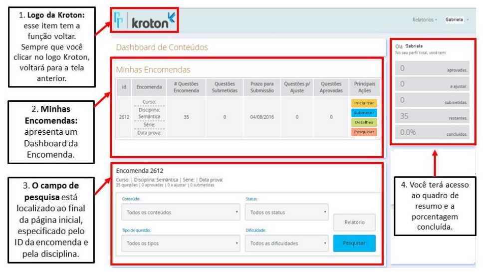
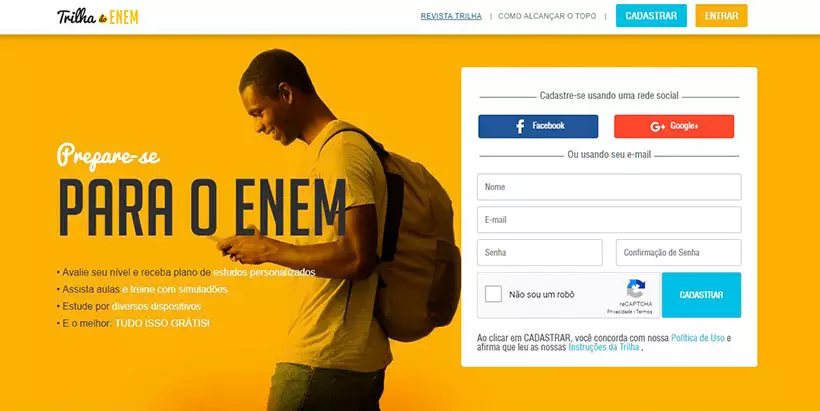
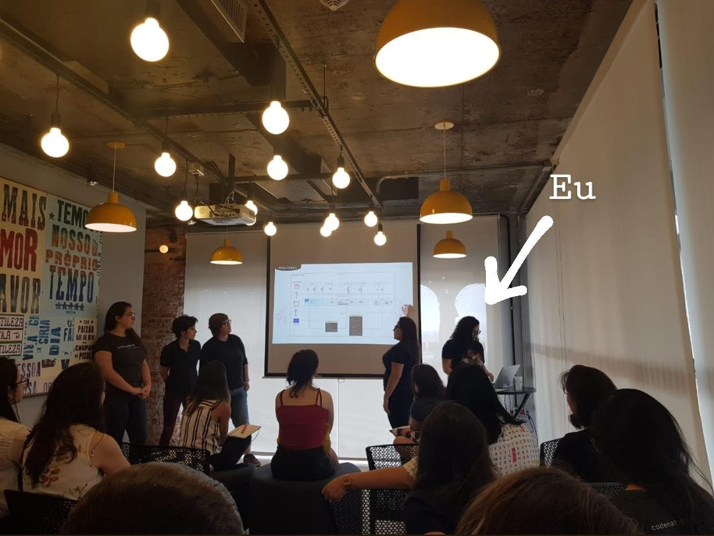

Cogna Educação · CNPq
2015 – 2020 · 5 anos · A base técnica que diferencia
Antes de me tornar PM, fui engenheira de software. Essa trajetória não é apenas um detalhe de currículo — é o que me diferencia. Entendo o que os times de tecnologia enfrentam, consigo ler código, participar de decisões de arquitetura e comunicar requisitos com precisão. Essa base foi construída na Cogna Educação e no CNPq, antes de entrar para o iFood.

Plataforma de Provas
Portal para professores criarem e gerirem avaliações digitais
Sistema interno voltado para professores do ecossistema Kroton / Cogna: um portal onde podiam cadastrar questões, montar provas e acompanhar o desempenho dos alunos por turma. Trabalhei no desenvolvimento e evolução da plataforma como Desenvolvedora Jr, centralizando o fluxo de avaliação — da elaboração das questões até a aplicação digital.
Stack utilizada

Trilha do Enem
Plataforma gratuita de preparação adaptativa para o ENEM
Entrei na Cogna como estagiária e fui efetivada como Desenvolvedora Jr. Trabalhei na construção e evolução do Trilha do Enem, uma plataforma gratuita que oferecia aulas, simulados e plano de estudos adaptativo para estudantes do Brasil inteiro. A plataforma foi coberta pela imprensa e chegou a mais de 250 mil usuários.
Stack utilizada

AceleraDev Java Women
Programa exclusivo para mulheres em Back-end Java
No fim de 2019, fui selecionada para o AceleraDev Java Women — um programa gratuito e exclusivo para mulheres, criado pela Codenation em parceria com o QuintoAndar. Foram 10 semanas de imersão em desenvolvimento Back-end com Java, com aulas presenciais na sede do QuintoAndar em São Paulo e desafios semanais de código. Das 30 participantes selecionadas, o QuintoAndar contratou 11 diretamente ao final do programa.
Stack
FXCode — Reconhecimento de Ícones
Pesquisa em redes neurais convolucionais aplicada a reconhecimento de imagens
Bolsista do CNPq, realizei iniciação científica na área de reconhecimento de imagens utilizando redes neurais de convolução. No projeto FXCode, fui responsável por produzir um modelo capaz de reconhecer ícones — treinado em Python com a biblioteca Keras — e integrá-lo a um aplicativo mobile para Android e iOS.
Stack